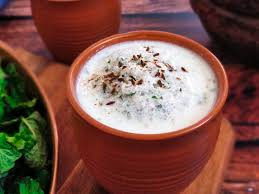

Masala Chaas Recipe

Ingredients:
- 2 cups plain yogurt (dahi)
- 3 cups cold water
- 1-inch piece of ginger, grated
- 2 green chilies, finely chopped (adjust to taste)
- 10-12 fresh mint leaves
- 10-12 fresh coriander leaves
- 1/2 teaspoon roasted cumin powder (bhuna jeera powder)
- 1/4 teaspoon black salt (kala namak)
- 1/2 teaspoon regular salt (or to taste)
- 1/4 teaspoon chaat masala (optional)
- 1/2 teaspoon lemon juice (optional)
- Ice cubes (optional)
Steps:
- In a large mixing bowl, whisk the yogurt until smooth.
- Gradually add the cold water to the yogurt, whisking continuously to ensure a smooth mixture. You can also use a hand blender for this step to get a frothy texture.
- Add the grated ginger, finely chopped green chilies, mint leaves, and coriander leaves to the mixture.
- Add roasted cumin powder, black salt, regular salt, and chaat masala (if using). Mix well.
- If you prefer a slight tang, add lemon juice and stir to combine.
- You can give the chaas a quick blend using a hand blender to ensure all the ingredients are well incorporated and the drink is slightly frothy.
- Refrigerate the masala chaas for at least 30 minutes to allow the flavors to meld and the drink to chill. Alternatively, you can serve it immediately over ice cubes if you prefer it extra cold.
- Stir the chaas well before serving to ensure the spices and herbs are evenly distributed.
- Pour the chilled masala chaas into glasses.
- Garnish with a sprinkle of roasted cumin powder and a few fresh mint or coriander leaves.
Back to Main Menu